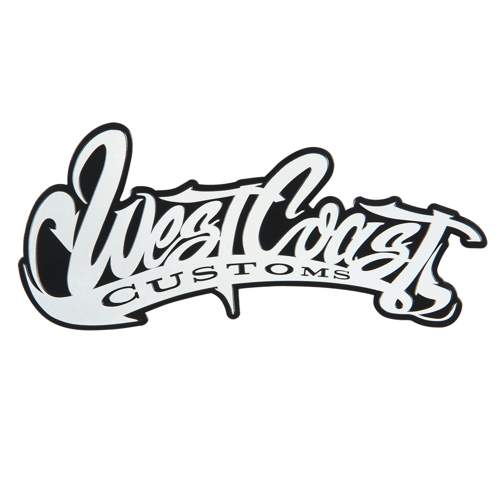

ОТ ВИЗУАЛИЗАЦИИ К РЕАЛЬНОСТИ
Если вы можете мечтать об этом, мы можем построить это.
West Coast Customs была создана в результате любви Райана Фридлингхауса к автомобилям, его творческого ума и миссии раздвигать границы и мыслить нестандартно.
West Coast Customs предлагает ведущие в отрасли услуги по кастомизации автомобилей, начиная от простых виниловых обертываний и заканчивая полностью оригинальными одноразовыми сборками автомобилей.
